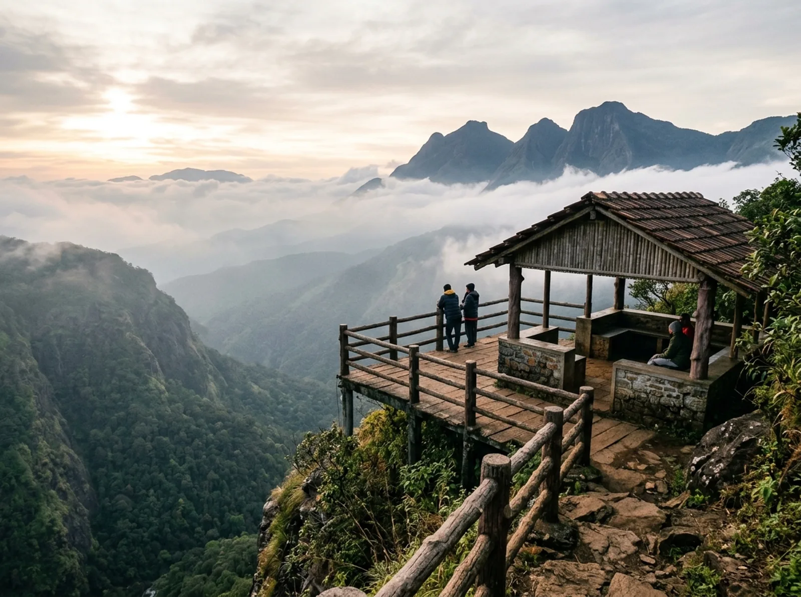

Main LookoutBisle Ghat Viewpoint (Beauty Spot)
A sheltered observation pavilion and wooden-railed platform perched over a vertical drop. From here, you look across an unfathomably deep gorge carved by the Giri River towards a breathtaking amphitheatre of three formidable mountain peaks:
-
Kumara Parvatha (Pushpagiri): 1,712 m, Karnataka's legendary, razor-sharp granite peak in Kodagu.
-
Patta Betta: Massive green ridge standing as a sheer wall across the valley.
-
Giri Betta (Dodda Betta): Rolling cloud-shrouded summits of the Hassan border.
Best time of day: 7:30 AM to 10:00 AM before heavy clouds accumulate, or 4:30 PM to sunset for golden valley hues.